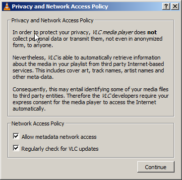

VLC Media Player
VLC is a free and open source cross-platform multimedia player and framework that plays most multimedia files as well as DVDs, Audio CDs, VCDs, and various streaming protocols.
Spyware Level: Not Spyware
VLC Media Player is not spyware, but it does have notable features in it that could be possible forms of spyware. However, all of these features are opt-in, and the software explicitly informs the user about the risks associated with these features. VLC is a model program that has convenience features in it that could compromise privacy, while still respecting user privacy.
VLC Media Player has been distributed with spyware programs by third parties
While VLC's creators do not distribute their player with spyware, it has been distributed with spyware[1] by other parties. If you download VLC Media Player, make sure you download it from VideoLAN's website.
VLC Media Player contains some opt-in spyware features
VLC Media player searches through online databases to find complete album covers / metadata for songs. This implicitly means that it sends requests to external servers, and those servers could log information about specific users' music libraries. VLC Media player also has a self-updater, however this does not update without the user's consent, and while there is no precedent for the developers to add spyware in its updates, it's still notable. This is the notice that users are presented with when first installing VLC, which adequately explains the implications of these features. The only improvement would be to not have them checked off by default.
